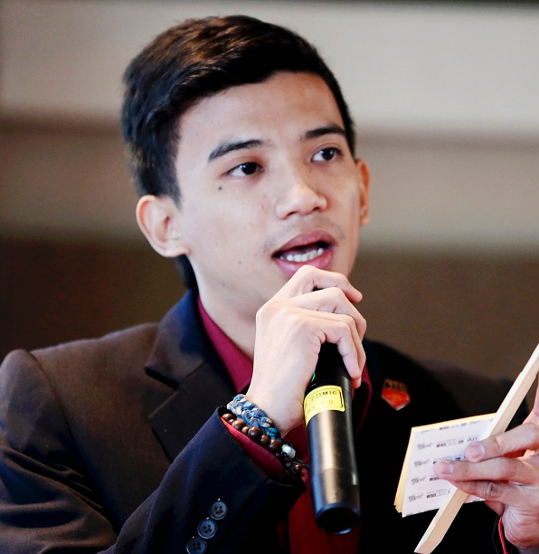
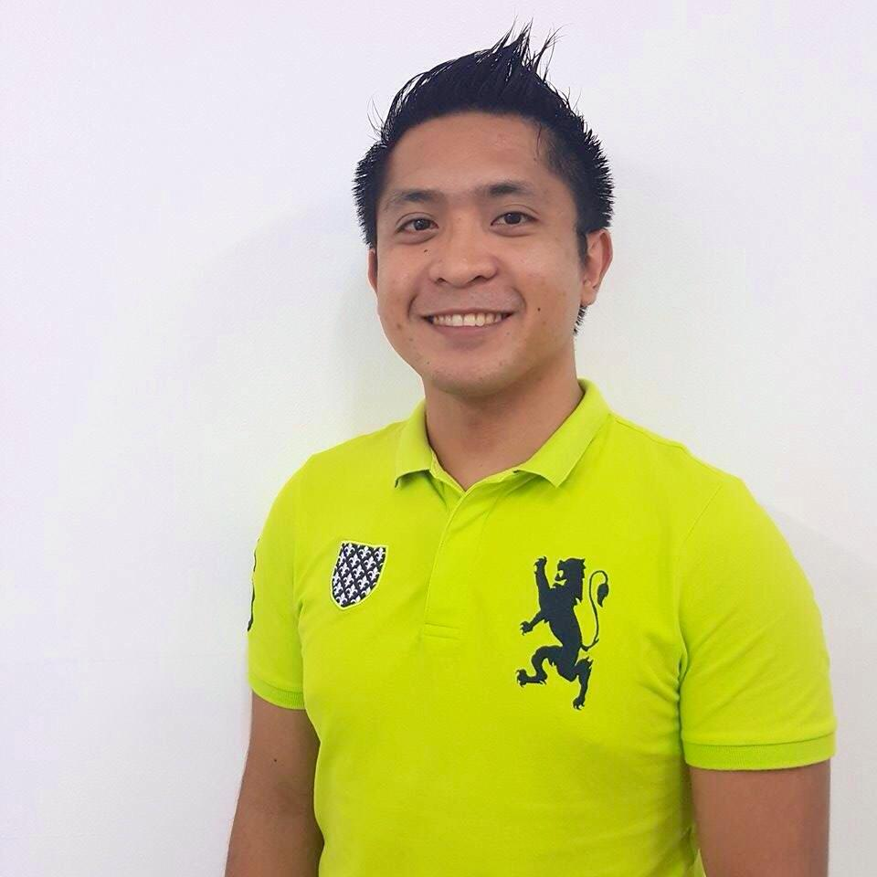
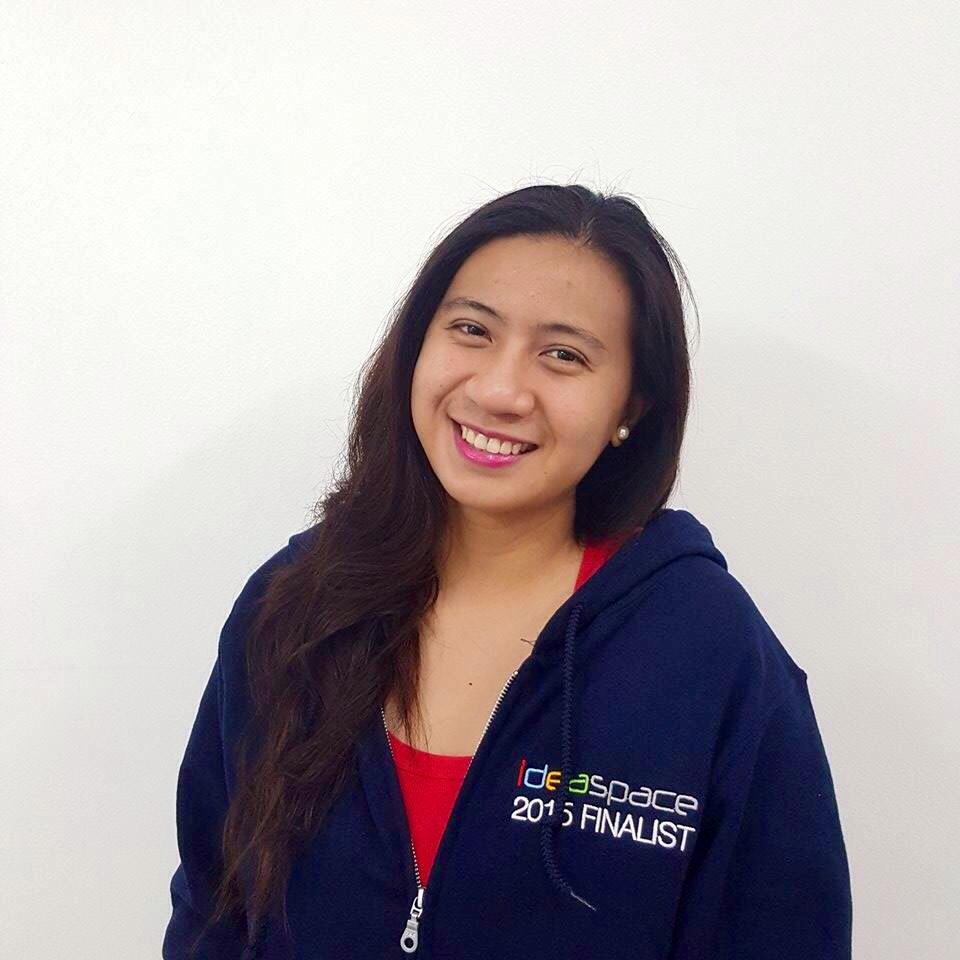
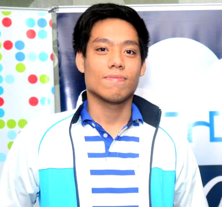
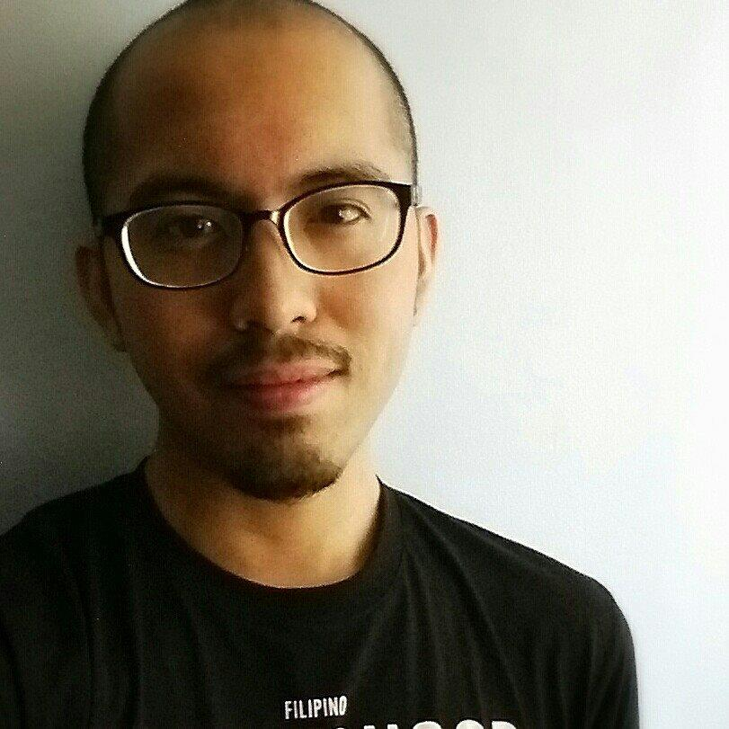
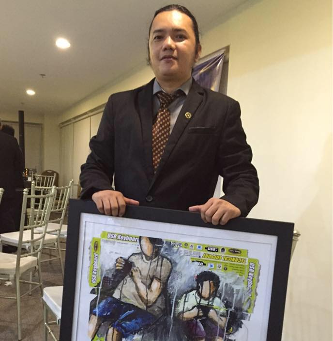
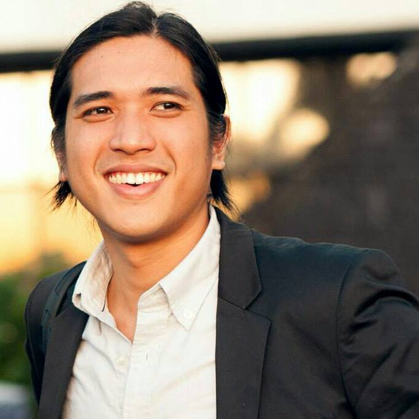
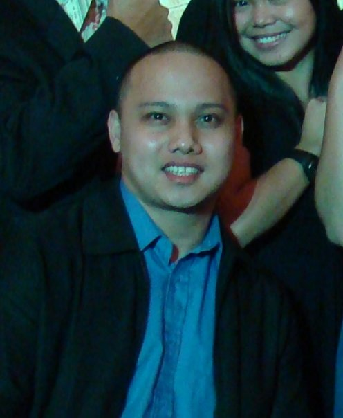
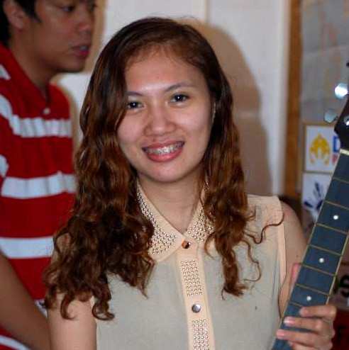

-

Christopher David
Toph is a VR Evangelist and Developer. R&D Engeineer at Nokia and Co-Founder of VR Philippines. Currently setting up VR Startup 'Veer' and is Board Member for VR at ACM SIGGRAPH Manila.
-

Eebok Baltazar Carpo
Currently taking up BS Entrepreneurship, Carpo is the president of the Young Entrepreneurs Society of Malayan Colleges Laguna. Founded the Prepaid Vendo Platform and one thhe Co-Founders for Sked.
-

Frank Rayo
Graduated Cum Laude for BS Computer Science at the University of the Philippines - Diliman and currently pursuing a Master's degree in CS. Founding member of UP CSI and VP for Innovation.
-

Lois Gerald Castilo
Fellow at the Watson Institute, Gerald is an advocate for educating students, teachers, and everyday people about new generation methods in starting a business. Also a co-founder of "Sked"
-

Albert Maquiñana
Co-founder and CTO of Zinergi, one of the Top 10 Startups from Ideaspace 2015. Albert has experience working in a multinational company focusing on IT Project Management and Operations Management.
-

Joanne Maquiñana
Co-founder and CEO of Zinergi, one of the Top 10 Startups from Ideaspace 2015. She has experience working in a multinational company focusing on IT Project Management and Operations Management.
-

Jethro De Guzman
Jethro De Guzman is currently a web developer in Ayannah. He develops websites - static, cms, and even e-commerce systems in PHP and Python language. He graduated BS Computer Engineering from the Philippine Polytechnic University.
-

Matt Lebrun
With 8 years of experience as a Software Engineer, Matt co-founded Python.PH, conducts professional programming training, and serves as a consultant for different companies.
-

Meric Mara
Meric is the current CEO and CTO of 8layer Technologies, the makers of KahelOS. Meric is a hard core Linux Enthusiast and actively interested in various open source projects and initiatives.
-

Miguel Cabral
CTO and Certified Wireless Technology Specialist of 8Layer Technologies. Miguel is also a former University professor. something to take up some space while we're at it to make sure that they all look thesame.
-

Paul De Paula
Paul is an influential open source advocate to students, developers, and stakeholders from various schools and private organizations. His topics range from Drupal, Data Visualization, to Mobile development.
-

Robert Reyes
Robert "Bob" Reyes is one of the local representatives of the global non-profit Mozilla, makers of the Firefox web browser and Firefox OS. He is the founder and Chief Technology Officer of TurfSite Web Services.
-

Rosiliza Rioja
Web Developer at i4 Asia Incorporated wow they gave me a very short description for this person so now I'm going to try to fill up some space because I'm to lazy to edit some CSS files . . . .